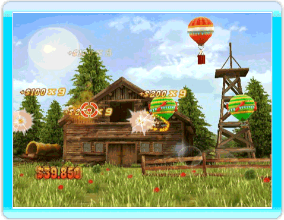
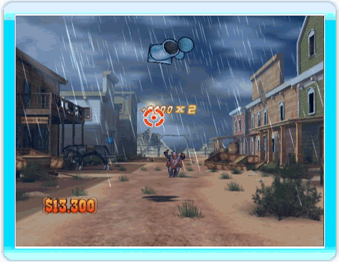

24 |
Schietspelletjes |
 |
Er vliegen heel wat sombrero’s door de lucht. Test je reactievermogen en verdien wat extra geld door er op te schieten. Soms moet je ze allemaal neerschieten. TIP ⇨ Hoe sneller je ze neerschiet, hoe meer geld je verdient! Schiet op de doelen zodra ze voorbijkomen. De gouden doelwitten zijn geld waard, maar kijk uit voor de rode: hierdoor verlies je juist geld! TIP ⇨ Schiet niet op de rode doelen. Let op: sommige doelen kunnen zich snel omdraaien zodat ze ineens een rood doelwit zijn! Zin in wat onschuldig schietplezier? Deze ballonnen vormen het perfecte doelwit. Maar kijk uit want sommigen zit vol dynamiet! Je kunt de kracht van de explosie echter ook in je voordeel gebruiken. TIP ⇨ Schiet op ballonnen van dezelfde kleur om meer geld te verdienen.  Weet je wat de belangrijkste sport in het Wilde Westen is? Op blikjes schieten natuurlijk! En alsof dat nog niet lastig genoeg is moet je zelfs blikjes een tijdlang lang in de lucht zien te houden zonder ze te laten vallen! TIP ⇨ Houd ze zo lang mogelijk in de lucht voor meer geld. Kijk uit voor die maffe wetenschappers! De rook ontneemt je het zicht waardoor je de blikjes minder makkelijk kunt raken. 
TIP ⇨ Soms worden de konijnen ook van onderaf aangevallen, houd dat in de gaten. Revolvergevechten in de saloon? Als sheriff moet jij de vrede zien te bewaren. Maak snel korte metten met de bandieten voordat ze jou onder het vuur nemen TIP ⇨ Kijk uit voor de grote indiaan. Als hij je vastpakt ben je nog niet jarig!
Jaag de bandieten uit de trein. Zodra je ze in het vizier krijgt moet je ze onder vuur nemen. Werk de bandieten zo snel mogelijk uit de weg voordat ze het op jou munten. TIP ⇨ Pas op dat je niet te snel schiet…anders raak je misschien de cancandanseres in het rood en verlies je geld!
|


 |
 |
 |